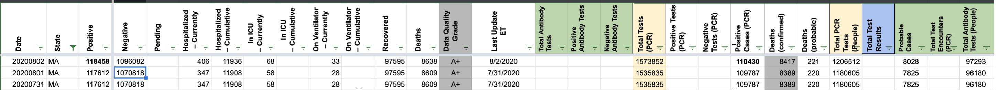
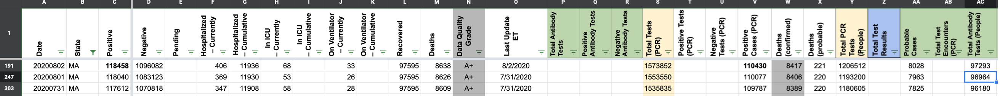
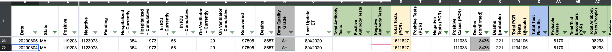
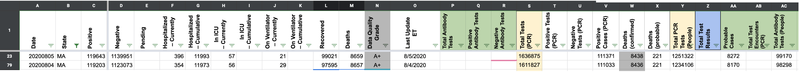

[MA] Missed 8/1 and 8/5 Update
Issue number 722
andrewghaly opened this issue on August 2, 2020 at 11:15 am
State or US: Massachusetts
Describe the problem Due to late update, 8/1 data from MA was not entered.
Link to data source https://www.mass.gov/doc/covid-19-dashboard-august-1-2020/download - August 1 data
Comments
jaclyde commented on August 5, 2020 at 8:30 pm
Aug 01 BEFORE  Aug 01 AFTER 
jaclyde commented on August 5, 2020 at 8:31 pm
Aug 05 BEFORE  Aug 05 AFTER 
andrewghaly commented on August 6, 2020 at 8:31 am
Thanks @jaclyde, #673 is also a similar issue.
Adding the missed 8/5 update to this issue. Link to 8/5 update: https://www.mass.gov/doc/covid-19-dashboard-august-5-2020/download